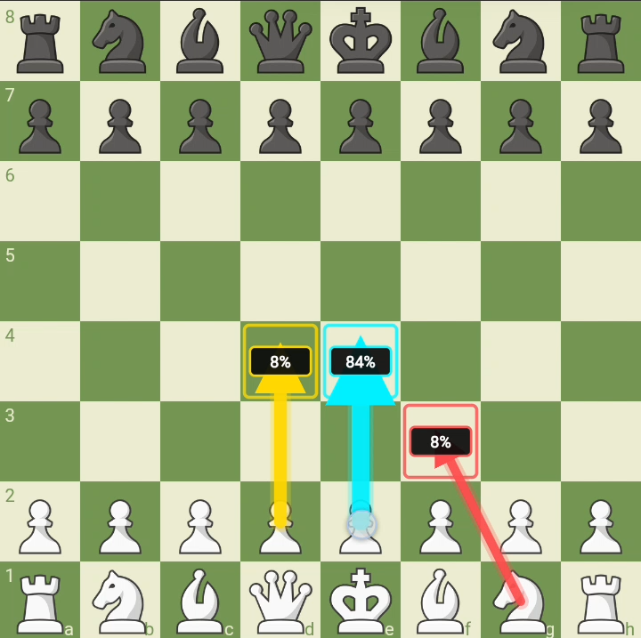

Stockfish 18
Full WASM engine in a worker. MultiPV lines, skill levels, combat depth table.
Stockfish 18 · Chess.com overlay
Mate.ai is an early-access Chrome extension that runs Stockfish 18 in your browser on Chess.com. Built as a free alternative to paid overlays.

On the board
Candidate moves, eval, and human-shaped delay live on Chess.com. No separate analysis window.
Full WASM engine in a worker. MultiPV lines, skill levels, combat depth table.
Time-control mistake matrices and delay curves so the line does not look perfect every move.
Magnus, Hikaru, Tal, Petrosian and more. Contempt and skill tuned per style.
Deeper search when you need it. Queue pre-analysis on the opponent's clock.
Auto-solve Chess.com puzzles with human delay. Toggle from the widget.
Tracks king and rook motion so FEN castling flags stay honest after pieces return.
Early access ZIP. Unzip, load unpacked, play. Free.
Install
Two paths. Desktop first, mobile if you are on Android with Lemur.
Use the button above or in the nav. Unzip so you can see manifest.json.
Go to chrome://extensions (Chrome / Brave) or edge://extensions (Edge).
Toggle Developer mode on (top right). Click Load unpacked and select the unzipped folder.
Start a game or puzzle. The Mate.ai widget sits on the board.
From the Play Store. Lemur can load Chrome-style extensions on Android.
Save the ZIP on the phone and extract it with Files or any zip tool.
In Lemur open Extensions (menu, or try chrome://extensions). Enable Developer mode, Load unpacked, point at the folder.
Use Chess.com inside Lemur. iOS Safari cannot load this extension type.
Android only for mobile. Desktop path above is the reliable route.
Tutorial
Three steps from first open to first analysis.
Open the widget. Choose a level or a named style (Tal, Petrosian, etc.).
MultiPV candidates with softmax percentages. Combat mode digs deeper.
Mistake rate and delay scale with time control so the session looks less engine-perfect.
Support
Mate.ai is free. If it helps you, a tip on Saweria keeps development going.
Not required. Downloads stay free either way.
Support on SaweriaCredits
Built by BagasValzz.
Engine: Stockfish 18 (WASM). UI: liquid glass overlay on Chess.com.
100% open source. Copy it, change it, sell it, claim it. Free alternative to paid overlays.
Need me: Discord.